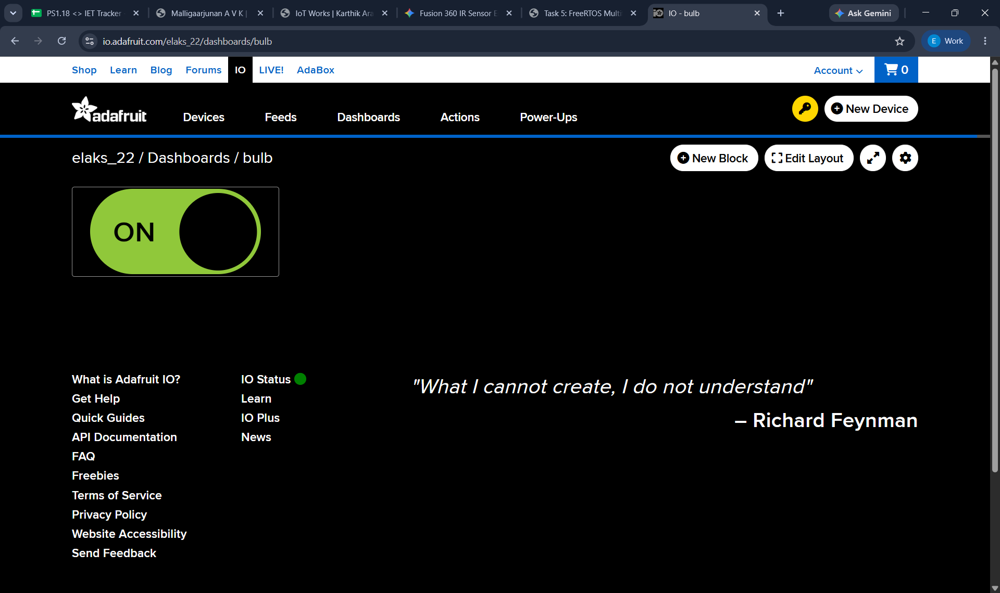
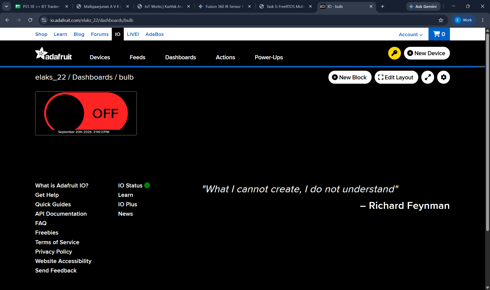

From local ESP32 control to remote cloud actuation
This project extends Project 1's local ESP32 web server into a cloud-connected IoT system. An Adafruit IO dashboard publishes ON/OFF commands through MQTT, the ESP32 receives them over Wi-Fi, and GPIO 26 drives a relay that switches a 230V AC bulb.
Learning Progression
IoT Project 02
Cloud communication after local HTTP control
Cloud Platform
Adafruit IO + MQTT
Dashboard and feed named on
Actuator
Relay on GPIO 26
Switching interface for the external bulb
Objective
Objective
Extend the local ESP32 control system into a cloud-based IoT application using Adafruit IO and MQTT. The system allows a user to control a physical 230V bulb remotely through an Adafruit IO dashboard while keeping all credentials private.
Evidence
Cloud Dashboard and Build Evidence
These are the available Project 2 assets from the portfolio workspace: the Adafruit IO dashboard, feed configuration, ON/OFF states, and the documented system flow.
Adafruit IO Smart dashboard with the Bulb ON/OFF control.Dashboard block configuration connected to the control feed.

ON state: the dashboard sends the value on.

OFF state: the dashboard sends the value off.Project flow from the cloud dashboard to the relay-controlled bulb.
Live Demonstration
Task 2 Video Demonstration
The provided demonstration clip records the cloud-controlled bulb workflow. The source file is kept local in the Project 2 asset folder.
Technologies Used
ESP32Arduino IDEAdafruit IOMQTTWi-FiRelayIoTEmbedded Systems
Project Overview
The ESP32 connects to Wi-Fi and authenticates with Adafruit IO. The Smart dashboard contains a Bulb toggle that writes on or off to the on feed. MQTT delivers that value to the ESP32, where the callback interprets the command and changes GPIO 26. The relay then switches the external bulb.
Cloud Configuration
Adafruit IO Account and Feed
Account and Feed
Platform: Adafruit IO was used as the cloud IoT service.
Dashboard: A dashboard named Smart provides the user-facing control.
Feed: A dedicated feed named on carries the bulb command.
Values: ON publishes on and OFF publishes off.
Credential Handling
The real Adafruit IO username, API key, Wi-Fi name, and Wi-Fi password are intentionally excluded from this portfolio. The code uses placeholders so the architecture can be understood without exposing credentials.
Architecture
How the Cloud Command Reaches the Bulb
User / Browser->Adafruit IO Dashboard->on Feed->MQTT Broker->Wi-Fi / Internet->ESP32->GPIO 26->Relay->230V AC Bulb
Understanding MQTT
Understanding MQTT
Publish / Subscribe Roles
Publisher: The Adafruit IO dashboard or cloud-side control publishes the command.
Broker: The Adafruit IO MQTT broker receives and routes the message.
Subscriber: The ESP32 subscribes to the on feed.
Message: The payload is on or off.
Why MQTT Fits This IoT Task
Lightweight communication for constrained devices.
Publish/subscribe architecture separates the dashboard from the device.
The ESP32 was programmed in Arduino IDE to connect to Wi-Fi, authenticate with Adafruit IO, subscribe to the on feed, interpret on/off values, and drive GPIO 26. Credentials are placeholders only.
The relay provides the switching interface between the low-voltage GPIO signal and the external load.
Safety: 230V AC wiring is hazardous. The mains-side connections must be properly insulated, enclosed, and made using an appropriately rated relay and wiring. Do not handle energized mains wiring.
Workflow
System Workflow
01
Open the dashboard
The user opens the Adafruit IO Smart dashboard.
02
Press the Bulb toggle
The user selects ON or OFF.
03
Update the on feed
The dashboard publishes the selected value to the dedicated feed.
04
Deliver through MQTT
The Adafruit IO MQTT broker routes the command to subscribed clients.
05
Receive at the ESP32
The ESP32 receives the cloud message over Wi-Fi.
06
Process the value
The firmware interprets on or off.
07
Change GPIO 26
The ESP32 changes the relay control output.
08
Switch the relay
The relay changes the load circuit state.
09
Respond at the bulb
The 230V bulb turns ON or OFF according to the command.
Engineering Process
Debugging & Problem Solving
Verified the ESP32 Wi-Fi connection.
Verified Adafruit IO authentication.
Verified the on feed and its dashboard configuration.
Tested the relay independently before integrating cloud control.
Confirmed GPIO 26 correctly controlled the relay.
Checked Serial Monitor output during each test.
Verified that ON/OFF commands were received from Adafruit IO.
Identified and corrected the dashboard/feed configuration.
Verified the final bulb response from the dashboard.
Testing
Testing Results
Functional Test Cases
Test 1: Dashboard ON -> relay ON and bulb ON.
Test 2: Dashboard OFF -> relay OFF and bulb OFF.
Test 3: ESP32 reconnects to Wi-Fi -> ESP32 reconnects to Adafruit IO.
Test 4: Relay tested independently -> relay switches correctly from GPIO 26.
Serial Monitor Evidence
Received: on
BULB ON
Received: off
BULB OFF
Learning
What I Learned
Cloud-based IoT architecture
ESP32 Wi-Fi communication
Adafruit IO feeds and dashboards
MQTT publish/subscribe architecture
Remote actuator control
GPIO-based relay control
Debugging IoT communication
Integration of software and hardware
Safe interfacing between low-voltage electronics and external loads
Project Outcome
From Local Control to Cloud IoT
Project 2 builds directly on Project 1. Project 1 established local HTTP control of an ESP32 output. This project adds cloud authentication, an Adafruit IO feed, MQTT messaging, relay interfacing, and remote control of an external load. Together they show a clear progression from embedded GPIO fundamentals to a connected IoT actuator system.